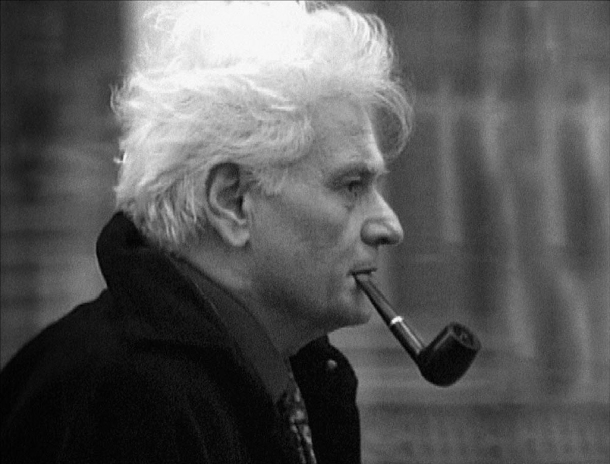
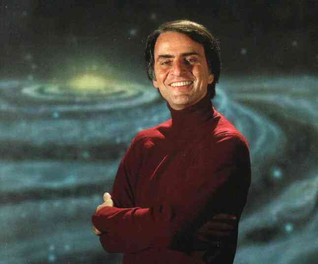
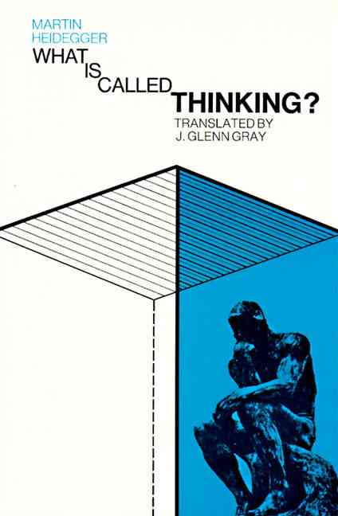
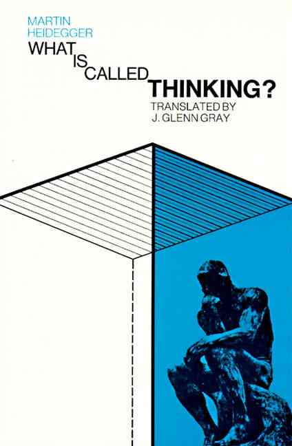
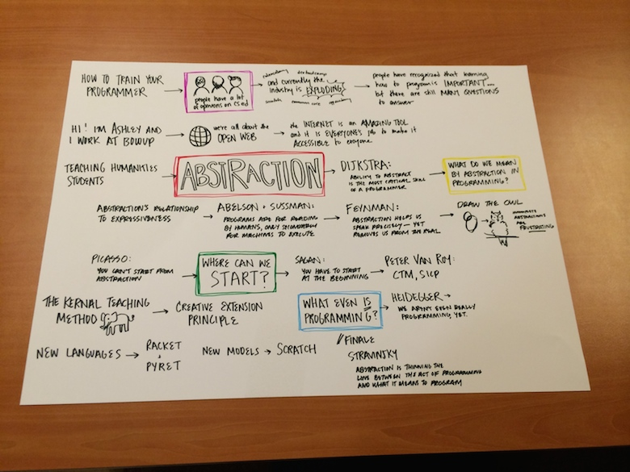

How to Train Your Programmer
ashley g. williams
BostonJS
7 August 2014
Take it from me, only students of mathematics can learn to code!
I can teach you to be a junior developer in 3 months! No, 3 weeks!
If you don't know C, you are not a real developer!
Computer Science education is growing extremely rapidly...
... in a word, EXPLODING

What does it mean to program?
How should we think about teaching and learning programing?
Hi, I'm Ashley
and I work at a company called Bocoup.
We're all about the OPEN WEB.
academic programmers vs non-academic programmers
programmers:
more academic background <-> more industry experience

ABSTRACTION
Our power, our muse, our curse.
The effective exploitation of his powers of abstraction must be regarded as one of the most vital activities of a competent programmer.
What do we mean by abstraction in programming?


Ruby
array.each do |element|
#do something
end
Javascript
for(var i = 0; i < array.length; i++){
//do something
}
Programs must be written for people to read, and only incidentally for machines to execute.


The real problem in speech is not precise language. The problem is clear language ... It is really quite impossible to say anything with absolute precision, unless that thing is so abstracted from the real world as to not represent any real thing."


There is no abstract art. You must always start with something. Afterward you can remove all traces of reality.
Where should we begin?
"If you wish to make an apple pie from scratch, you must first invent the universe."


The Kernel Teaching Method
"One approach to study computer programming is to study programming lan- guages. But there are a tremendously large number of languages, so large that it is impractical to study them all. How can we tackle this immensity? We could pick a small number of languages that are representative of different programming paradigms. But this gives little insight into programming as a unified discipline. This book uses another approach."
Creative Extension Principle
What do we even *mean* when we talk about programming?
 

The most thought-provoking thing in our thought-provoking time is that we are still not thinking.


It is the transcendent (or 'abstract' or 'self-contained') nature of music that the new so called concretism--Pop Art, eighteen-hour slices-of-reality films, musique concrete--opposes. But instead of bringing art and reality closer together, the new movement merely thins out the distinction.
"Scientists work from models acquired through education and through subsequent exposure to the literature often without quite knowing or needing to know what characteristics have given these models the status of community paradigms"

What does it mean to program?
How should we think about teaching and learning programing?
Resources
- "On the Cruelty of Really Teaching Computer Science" Edsgar Dijkstra, (1988)
- "Structure and Interpretation of Computer Programs", Harold Abelson and Gerald Jay Sussman (1984)
- "Concepts, Techniques, and Models of Computer Programming", Peter Van Roy and Seif Haridi Sussman (2004)
- Racket Language (1994)
- Pyret Language, Brown University (2013)
- Scratch, MIT Media Lab (2006)
Lecture Notes(click for larger version)
thank you!
ashley williams
@ag_dubs
ashley@bocoup.com
ashleygwilliams